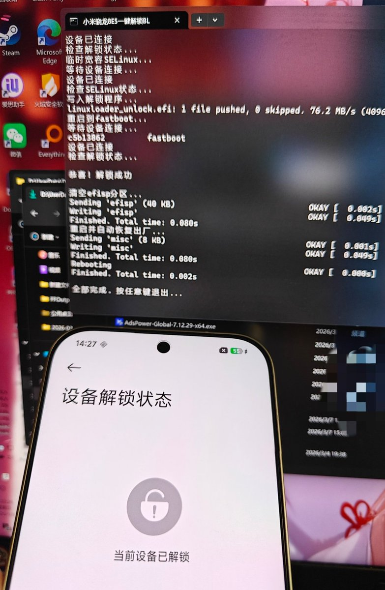

奶昔🥤
@realNyarime
@RainEngine2024 已经帮你宣传了，希望生意好起来🥺

奶昔🥤
@realNyarime
找雨晴姐姐买小米/红米骁8EliteGen5处理器的设备（小米17、小米17Pro、小米17ProMax、小米17Ultra、红米K90ProMax）都可以先解锁后激活🤗
不在广东，也可以让她帮忙邮寄（如果不在乎拆机的推友）
现在新买的激活都必须强制OTA才能正常使用，解BL只要不升级随时都可以解，但免BL获取ROOT权限很快就云控 https://t.co/NPlNfy628v https://t.co/2DSa1Vww0m
夏日晴海
@RainEngine2024
找我买可以先操作解锁再激活 https://t.co/mQGAB7MIEf